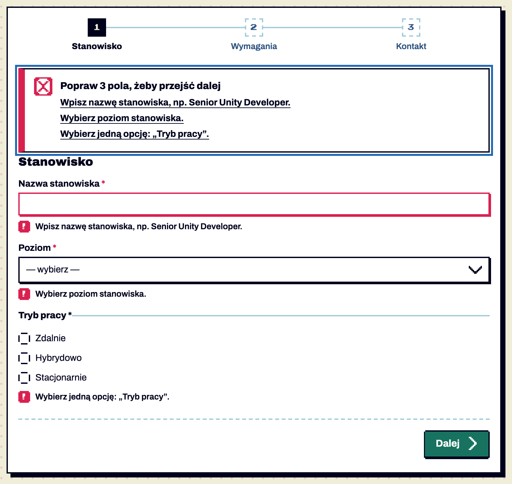
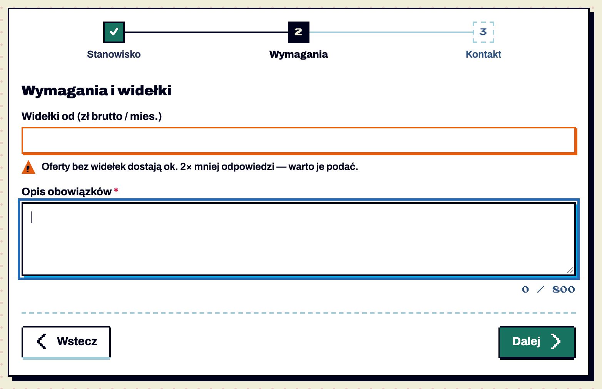

Wzorce / Formularz
Formularz — walidacja, podsumowanie błędów, kroki
testowy Formularz z walidacją, podsumowaniem błędów i krokami · od 1.8 — brakuje: użycie na 2 ekranach, test z czytnikiem
Wzorzec całego formularza: kiedy pokazywać błędy, jak je zebrać i jak podzielić długi formularz na kroki. Krótki formularz (do ~8 pól) — jeden ekran; dłuższy — 3–5 kroków. Pojedyncze pola opisuje K23. Potwierdzone w dokumentacji S01 §6.18.


Anatomia i komponenty składowe
| Część / rola | Wymagana / opcjonalna | Składnik / źródło | Co można zmienić / status |
|---|---|---|---|
| formularz | wymagany | form[data-validate] | Potwierdzone w dokumentacji |
| podsumowanie błędów | przy wysłaniu z błędami | .notice-error.error-summary w [data-error-summary] | Potwierdzone w dokumentacji |
| wskaźnik kroków | w formularzu kroków | ol.steps-progress | Potwierdzone w dokumentacji |
| krok | w formularzu kroków | section.wizard-step z h2 | Potwierdzone w dokumentacji |
| nawigacja kroków | w formularzu kroków | .wizard-nav: Wstecz / Dalej / wyślij | Potwierdzone w dokumentacji |
Warianty i zastosowanie
| Oś | Wartość | Kiedy użyć | Co się zmienia | Ograniczenia / status / źródło |
|---|---|---|---|---|
| moment | po opuszczeniu pola | pole z treścią | błąd pod polem | Potwierdzone w dokumentacji |
| moment | przy wysłaniu / „Dalej” | cały formularz / bieżący krok | błędy + podsumowanie z fokusem | Potwierdzone w dokumentacji |
| moment | w trakcie pisania | — | tylko gaszenie naprawionego błędu | Potwierdzone w dokumentacji |
| krok | zrobiony | — | zielony kwadrat z ✓ | Potwierdzone w dokumentacji |
| krok | bieżący | — | granatowy, aria-current="step" | Potwierdzone w dokumentacji |
| krok | kolejny | — | przerywana ramka | Potwierdzone w dokumentacji |
Zachowanie, treści i lokalizacja
Podsumowanie: „Popraw 3 pola, żeby przejść dalej” + lista komunikatów jako linki do pól (klik ustawia fokus na polu). „Dalej” sprawdza tylko bieżący krok, fokus przechodzi na nagłówek kolejnego kroku, zmiana jest ogłaszana („Krok 2 z 3: Wymagania”). Sprawdzone automatycznie: puste pola, link do pola, za krótki tekst, ostrzeżenie, przejście 3 kroków, błędny e-mail, poprawne wysłanie Potwierdzone w dokumentacji.
Zalecane i niewskazane
| Zalecane — przykład | Niewskazane — przykład | Powód / status / źródło |
|---|---|---|
| błąd po opuszczeniu pola | czerwone pola od razu po wejściu | karanie za nic Potwierdzone w dokumentacji |
| „Wpisz co najmniej 5 znaków (teraz 3).” | „Nieprawidłowa wartość” | komunikat mówi, co zrobić Potwierdzone w dokumentacji |
| przycisk wysyłki aktywny | zablokowany do czasu wypełnienia | użytkownik nie wie, czego brakuje Potwierdzone w dokumentacji |
| 3–5 kroków z nazwami | 10 kroków bez nazw | Rekomendacja |
Tokeny i style
| Zastosowanie | Token | Tryb / wariant | Wartość | Źródło | Status |
|---|---|---|---|---|---|
| podsumowanie | --status-error | #D9214F | S02 | Potwierdzone w dokumentacji | |
| krok zrobiony | --action | #17735F | S02 | Potwierdzone w dokumentacji | |
| krok bieżący | --ink | #00021C | S02 | Potwierdzone w dokumentacji | |
| łącznik kroków | --line-soft / --line | 2 px | S02 | Potwierdzone w dokumentacji |
Wymiary, odległości i układ
| Elementy / krawędzie | Wariant | Wartość / relacja | Token | Reguła / źródło / dokładność |
|---|---|---|---|---|
| kroki | — | kwadrat 28 px, łącznik 2 px | — | Potwierdzone w dokumentacji |
| nawigacja | — | linia przerywana nad, 24 px odstępu | — | Potwierdzone w dokumentacji |
| telefon | < 600 px | nazwa tylko bieżącego kroku | — | Potwierdzone w dokumentacji |
Typografia
| Rola tekstu | Styl | Font / weight | Rozmiar | Interlinia | Tracking | Kolor / zachowanie / status |
|---|---|---|---|---|---|---|
| tytuł kroku | h2 | Archivo 900 | 18 | 28 | −0.45px | Potwierdzone w dokumentacji |
| nazwa kroku | — | Archivo 600 / 800 bieżący | 13 | 18 | — | Potwierdzone w dokumentacji |
| numer kroku | — | Press Start 2P | 10 | — | — | Potwierdzone w dokumentacji |
Przykład na żywo
Ta sama sekcja co w examples/wzorce.html — działa na systemie 1.11.0. Przełącz motyw w nagłówku, żeby zobaczyć tryb ciemny.
Formularz w krokach: dodaj ofertę
Błąd pokazuje się po opuszczeniu pola albo przy próbie przejścia dalej — nigdy w trakcie pisania. „Dalej” sprawdza tylko bieżący krok i pokazuje podsumowanie błędów z linkami do pól. Ostrzeżenie (pomarańczowe) podpowiada, ale nie blokuje. Spróbuj kliknąć „Dalej” z pustymi polami.
Kod przykładu
<section class="ex" id="formularz" aria-labelledby="h-form">
<h2 id="h-form">Formularz w krokach: dodaj ofertę</h2>
<p>Błąd pokazuje się po opuszczeniu pola albo przy próbie przejścia dalej — nigdy w trakcie pisania. „Dalej” sprawdza tylko bieżący krok i pokazuje podsumowanie błędów z linkami do pól. Ostrzeżenie (pomarańczowe) podpowiada, ale nie blokuje. Spróbuj kliknąć „Dalej” z pustymi polami.</p>
<form class="panel wizard" data-validate data-wizard aria-labelledby="h-wiz">
<h2 id="h-wiz" class="sr-only">Dodaj ofertę</h2>
<ol class="steps-progress" aria-label="Postęp">
<li><span class="step-label">Stanowisko</span></li>
<li><span class="step-label">Wymagania</span></li>
<li><span class="step-label">Kontakt</span></li>
</ol>
<div data-error-summary></div>
<section class="wizard-step" aria-labelledby="s1">
<h2 id="s1" style="font:900 18px/28px var(--font-sans);margin:0 0 12px">Stanowisko</h2>
<div class="field"><label for="w-title">Nazwa stanowiska <span class="req" aria-hidden="true">*</span></label><input id="w-title" name="title" required minlength="5" data-msg-required="Wpisz nazwę stanowiska, np. Senior Unity Developer." autocomplete="off"></div>
<div class="field"><label for="w-lvl">Poziom <span class="req" aria-hidden="true">*</span></label><div class="select"><select id="w-lvl" required data-msg-required="Wybierz poziom stanowiska."><option value="">— wybierz —</option><option>Junior</option><option>Mid</option><option>Senior</option><option>Lead</option></select></div></div>
<fieldset><legend>Tryb pracy <span class="req" aria-hidden="true">*</span></legend>
<label class="radio"><input type="radio" name="mode" value="zdalnie" required id="w-mode">Zdalnie</label>
<label class="radio"><input type="radio" name="mode" value="hybrydowo">Hybrydowo</label>
<label class="radio"><input type="radio" name="mode" value="biuro">Stacjonarnie</label></fieldset>
</section>
<section class="wizard-step" aria-labelledby="s2" hidden>
<h2 id="s2" style="font:900 18px/28px var(--font-sans);margin:0 0 12px">Wymagania i widełki</h2>
<div class="field"><label for="w-sal">Widełki od (zł brutto / mies.)</label><input id="w-sal" name="salary" type="number" inputmode="numeric" min="3000" max="80000" data-msg-min="Najniższa kwota to 3 000 zł." data-warn-empty="Oferty bez widełek dostają ok. 2× mniej odpowiedzi — warto je podać."></div>
<div class="field"><label for="w-desc">Opis obowiązków <span class="req" aria-hidden="true">*</span></label><textarea id="w-desc" name="desc" required minlength="40" maxlength="800" data-count="w-desc-n"></textarea><p class="field-count" id="w-desc-n"></p></div>
</section>
<section class="wizard-step" aria-labelledby="s3" hidden>
<h2 id="s3" style="font:900 18px/28px var(--font-sans);margin:0 0 12px">Kontakt</h2>
<div class="field"><label for="w-mail">E-mail do zgłoszeń <span class="req" aria-hidden="true">*</span></label><input id="w-mail" name="mail" type="email" required autocomplete="email"></div>
<div class="field"><label for="w-www">Strona firmy</label><input id="w-www" name="www" type="url" placeholder="https://"></div>
<fieldset><legend class="sr-only">Zgody</legend>
<label class="checkbox"><input type="checkbox" id="w-rules" required data-msg-required="Zaakceptuj regulamin publikacji, żeby opublikować ofertę.">Akceptuję regulamin publikacji</label></fieldset>
</section>
<div class="wizard-nav">
<button class="btn btn-secondary" type="button" data-wizard-prev><span class="icon i-chevron-left" aria-hidden="true"></span>Wstecz</button>
<button class="btn btn-primary" type="button" data-wizard-next>Dalej<span class="icon i-chevron-right" aria-hidden="true" style="margin:0 -4px 0 0"></span></button>
<button class="btn btn-primary" type="submit">Opublikuj ofertę</button>
</div>
</form>
</section>Właściwości i atrybuty
| Właściwość / atrybut | Typ | Wartości pokazane / opisane | Domyślna | Efekt i zastosowanie | Zależności / status / źródło |
|---|---|---|---|---|---|
| data-validate | flaga | — | — | włącza walidację systemu | Potwierdzone w dokumentacji |
| data-wizard | flaga | — | — | kroki | Potwierdzone w dokumentacji |
| data-msg-* | tekst | required, email, minlength, pattern, min, max, match | domyślne po polsku | własny komunikat | Potwierdzone w dokumentacji |
| pp:valid | zdarzenie | — | — | formularz poprawny | Potwierdzone w dokumentacji |
Specyfikacja (design.md §6.18)
Przykład: examples/wzorce.html#formularz. Kod: <form data-validate> + ui-controls.js.
| Zasada | Jak |
|---|---|
| Etykieta zawsze nad polem | .field > label; placeholder tylko jako przykład wartości („https://”), nigdy zamiast etykiety |
| Pola wymagane | required + <span class="req" aria-hidden="true">*</span>; gdy wymagane są prawie wszystkie — oznacz opcjonalne słowem „(opcjonalnie)” |
| Kiedy walidować | po opuszczeniu pola (jeśli coś wpisano) i przy wysłaniu / „Dalej”; nigdy w trakcie pisania — w trakcie pisania tylko gasimy naprawiony błąd |
| Błąd pola | .field.is-error + .field-error pod polem + aria-invalid + aria-describedby (skrypt robi to sam) |
| Treść błędu | co zrobić, nie co jest źle: „Wpisz adres e-mail w formacie nazwa@domena.pl.”, „Wpisz co najmniej 5 znaków (teraz 3).” Własne komunikaty: data-msg-required, -email, -minlength, -pattern, -min, -max, -match |
| Podsumowanie błędów | przy wysłaniu z błędami: .notice-error.error-summary na górze formularza („Popraw 3 pola, żeby przejść dalej”) z linkami do pól; dostaje fokus i role="alert"; miejsce wskazuje <div data-error-summary> |
| Ostrzeżenie | data-warn-empty="…" → .field.is-warning + .field-warning (pomarańczowy trójkąt); nie blokuje wysłania |
| Kroki | data-wizard + ol.steps-progress (zrobione ✓ / bieżący aria-current="step" / kolejne przerywane) + section.wizard-step + .wizard-nav (Wstecz / Dalej / wyślij); „Dalej” sprawdza tylko bieżący krok, fokus przechodzi na nagłówek kroku, zmiana ogłaszana („Krok 2 z 3: Wymagania”). 3–5 kroków; na telefonie widać tylko nazwę bieżącego |
| Po wysłaniu | zdarzenie pp:valid → ppToast({status:'success', …}) albo przejście na stronę potwierdzenia |
| Przycisk wysyłki | zawsze aktywny (błędy pokazuje walidacja); zablokowany tylko z powodem (.btn-reason), np. brak CV |
Cel: WCAG 2.2 AA. Statyczne materiały i testy automatyczne w Chrome nie dowodzą zgodności — miejsca oznaczone „Do testu we wdrożeniu” wymagają testu z czytnikiem ekranu (design.md §0.6).
| Obszar | Ustalenie lub wymaganie | Dowód / status | Kryterium / wzorzec | Jak sprawdzić |
|---|---|---|---|---|
| podsumowanie | role="alert", fokus po wysłaniu, linki do pól | Potwierdzone w dokumentacji | WCAG 3.3.1, 2.4.3 | czytnik Do testu we wdrożeniu |
| kroki | aria-current="step", ogłoszenie zmiany kroku, fokus na nagłówku | Potwierdzone w dokumentacji | WCAG 4.1.3, 2.4.3 | czytnik Do testu we wdrożeniu |
| bez natywnych dymków | novalidate; komunikaty systemu | Potwierdzone w dokumentacji | WCAG 3.3.3 (AA) | — |
| czas | brak limitu czasu na wypełnienie | Potwierdzone w dokumentacji | WCAG 2.2.1 | — |
Źródła
S01 §6.18; S03 ui-controls.js; S21 (sekcja Formularz).